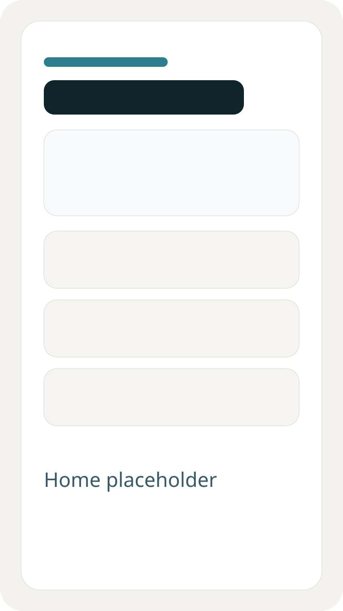
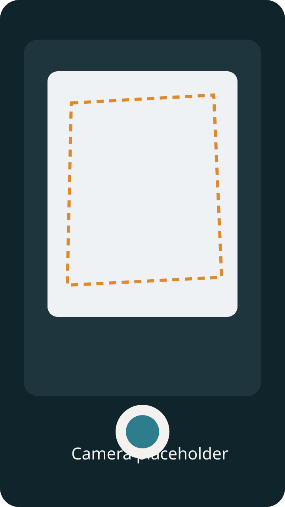
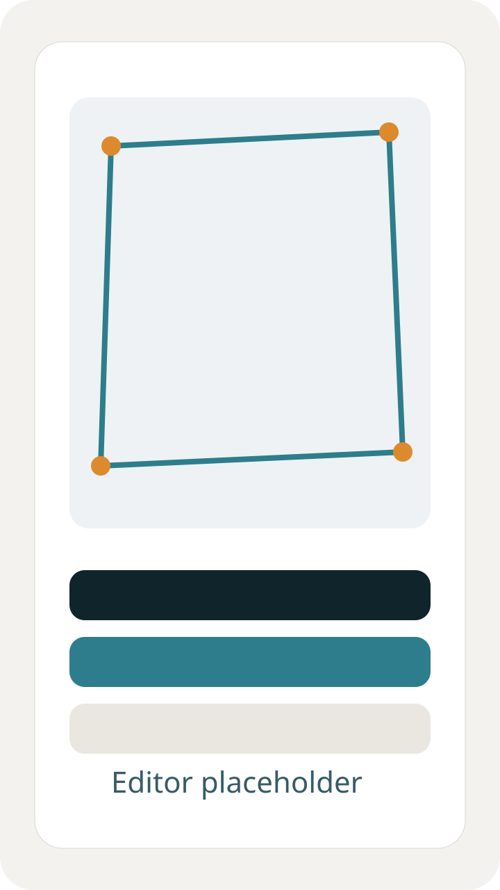
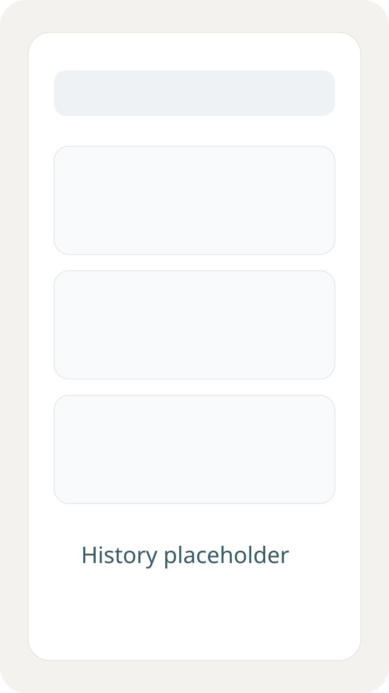

Captura e scanner guiado
CameraX para fluxo manual e ML Kit Document Scanner para uma experiência guiada mais rápida.
Scanora é um app Android original para capturar documentos, revisar páginas, rodar OCR local e gerar arquivos limpos para estudo, trabalho e rotina administrativa.
Captura → Ajuste → Filtros → OCR → Exportação
CameraX para fluxo manual e ML Kit Document Scanner para uma experiência guiada mais rápida.
Correção de perspectiva, normalização de iluminação, filtros e limpeza de bordas pretas.
Reconhecimento de texto on-device com cópia rápida e reaproveitamento no histórico.
Páginas, tags, favoritos, busca por título e revisões antes da exportação final.




Scanora prioriza processamento local, exportação local e compartilhamento via Android sem backend obrigatório.
Refinar detecção de contornos, crop manual e mensagens de erro.
Melhorar busca, filtros, testes e experiência de lotes com múltiplas páginas.
Preparar a linha 1.0 com hardening de storage, QA e publicação.
git clone https://github.com/seunome/scanora.git
cd scanora
./gradlew assembleDebugUse Android Studio com JDK 17 e Android SDK Platform 36.
Sim, o MVP foi pensado para processamento local. Alguns componentes guiados do ML Kit podem depender do Google Play services no aparelho.
Está preparado como base séria de produto, mas ainda faltam polimento de release, QA em dispositivos reais e screenshots finais.
Não no MVP atual. Isso é intencional para manter o app simples, privado e offline-first.